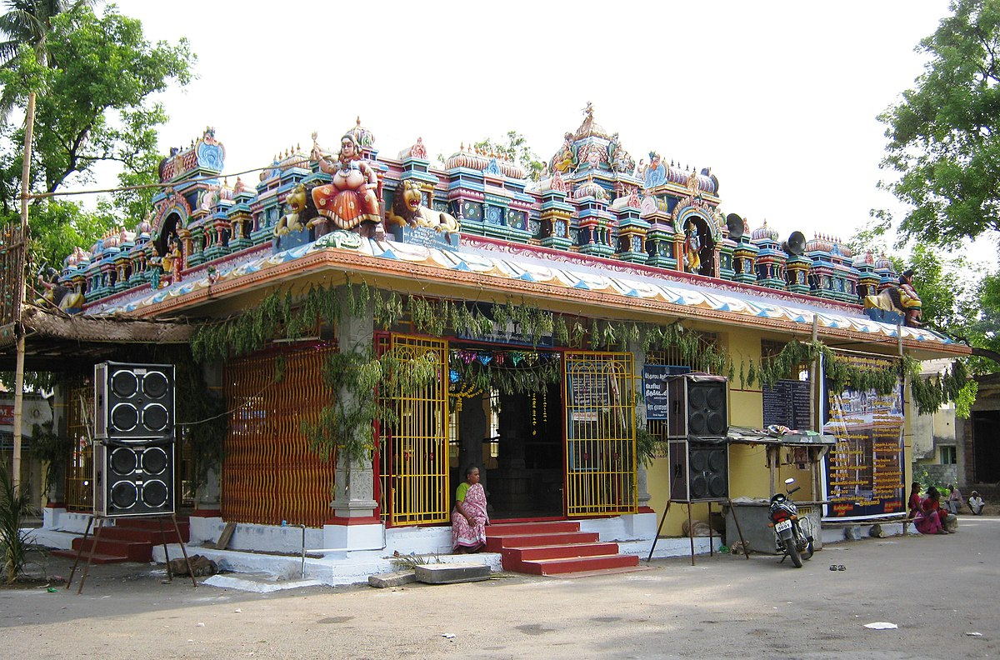
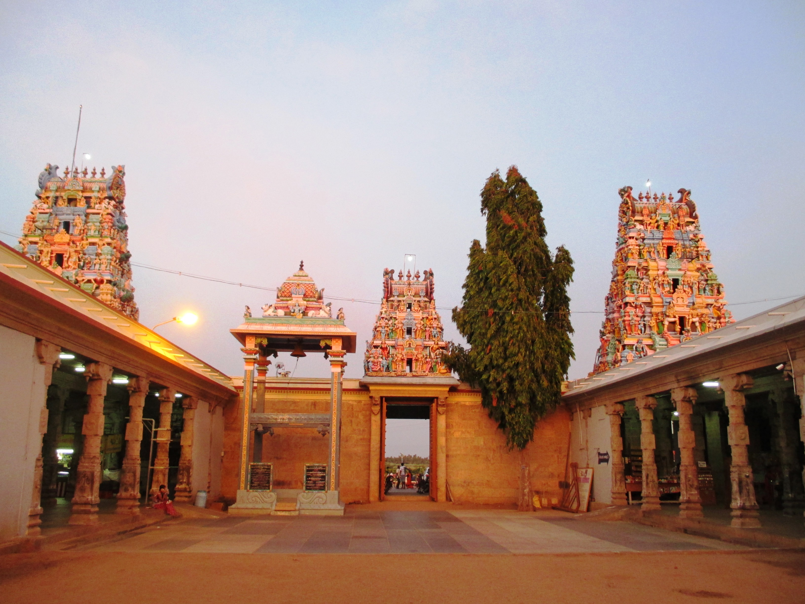
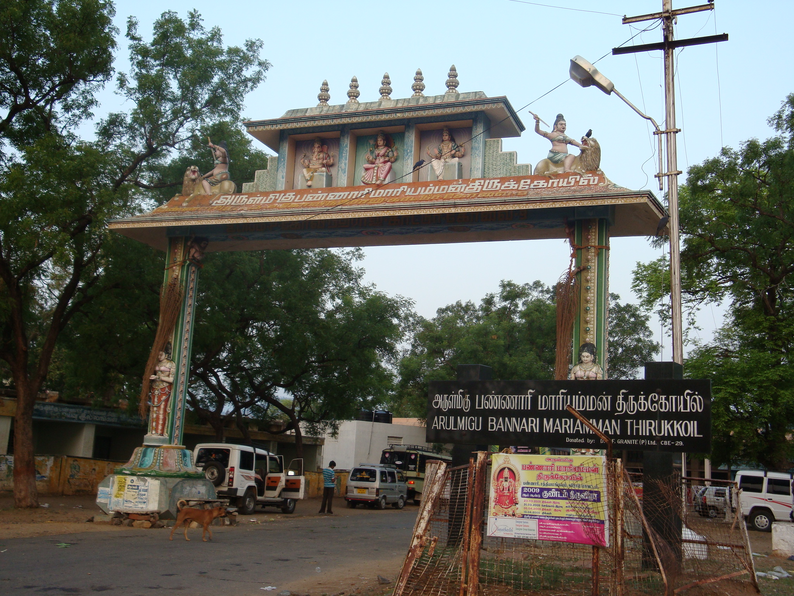
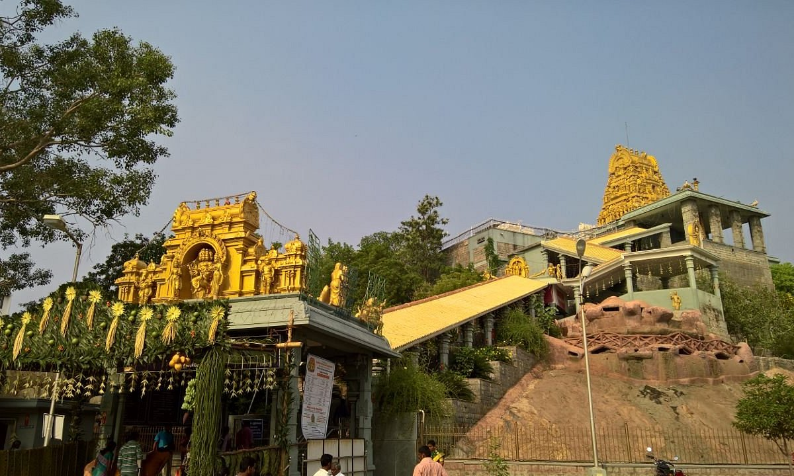
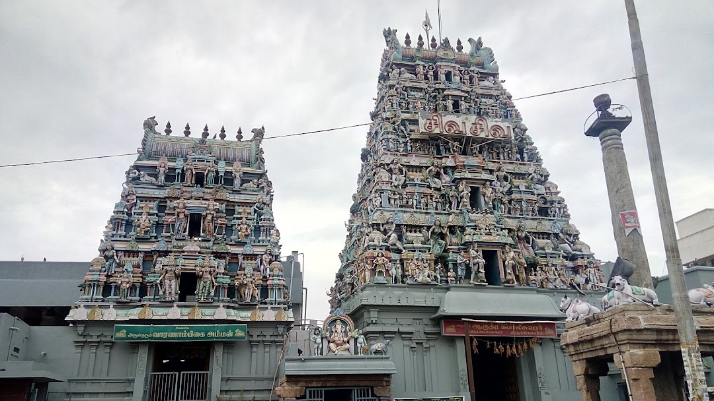

Erode is a district located in the state of Tamil Nadu, India. The district is known for its historical and cultural significance, and it is home to several famous temples that attract devotees and tourists. Explore the divine ambiance and architectural marvels of these renowned temples in Erode.
Periya Mariamman Temple, Erode
Periya Mariamman Temple is a popular temple dedicated to Goddess Mariamman. It is located in the heart of Erode city and is known for its grand annual festival, attracting thousands of devotees.
Read More ->Kodumudi Magudeswarar Temple
Kodumudi Magudeswarar Temple is a renowned temple located in the town of Kodumudi in Erode district. The temple is dedicated to Lord Magudeswarar and is highly revered by devotees. It is famous for its spiritual significance and hosts various religious festivals and cultural celebrations throughout the year. Devotees visit the temple to seek the blessings of Lord Magudeswarar and experience the divine atmosphere of the sacred place. The temple's vibrant festivals attract a large number of devotees, creating a festive and joyful ambiance
Read More ->Bannari Amman Temple, Sathyamangalam
Bannari Amman Temple is a renowned temple located in Sathyamangalam town of Erode district. It is dedicated to Goddess Mariamman and attracts a large number of devotees, especially during the annual car festival.
Read More ->Thindal Murugan Temple, Erode
This temple dedicated to Lord Murugan is located atop Thindal Hill and offers panoramic views of the surrounding landscape.
Read More ->Arudra Kabaleeswarar Temple, Erode
Arudra Kabaleeswarar Temple is a historic Hindu temple dedicated to Lord Shiva, located in Erode, Tamil Nadu. The temple has a rich history and is considered a sacred place of worship.
Read More ->Kasi Viswanathar Temple, Gobichettipalayam

Kasi Viswanathar Temple is an ancient temple dedicated to Lord Shiva. It is situated in Gobichettipalayam town of Erode district and is known for its architectural beauty and spiritual significance.
Read More ->Pariyur Kondathu Kaliamman Temple

Pariyur Kondathu Kaliamman Temple is a famous temple dedicated to Goddess Kali. It is located in Pariyur village of Erode district and is known for its annual festival called "Kondathu Kaliamman Thiruvizha."
Read More ->Kodandaramar Temple, Erode

This temple dedicated to Lord Rama, Sita, and Lakshmana is known for its architectural beauty and spiritual significance.
Read More ->Veerapandi Gowmariamman Temple, Kangayam

Veerapandi Gowmariamman Temple is a popular temple dedicated to Goddess Gowmariamman. It is located in Kangayam town of Erode district and is known for its vibrant festivals and religious significance.
Read More ->Chennimalai Murugan Temple

Chennimalai Murugan Temple is a famous temple dedicated to Lord Murugan. It is situated in Chennimalai town of Erode district and is known for its annual festival called "Kanda Sashti." The temple offers a panoramic view of the surrounding hills.
Read More ->Sakthi Vinayagar Temple, Modakurichi

Sakthi Vinayagar Temple is a popular temple dedicated to Lord Vinayagar (Ganesha). It is located in Modakurichi village of Erode district and is known for its vibrant festivals and spiritual ambiance.
Read More ->